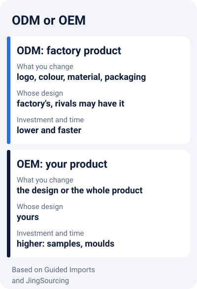
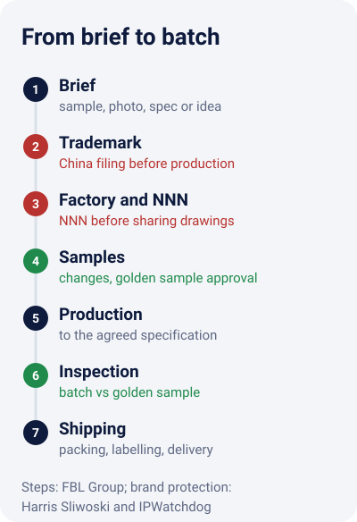

Manufacturing in China Under Your Own Brand: ODM or OEM, Samples and Brand Protection
To launch a product under your own brand in China, you need to make three decisions before you pay for the batch. First, the route: take a factory's existing product and put your logo on it (ODM), or make your own product to your own spec (OEM). Second, approve a golden sample that the batch will be checked against. Third, protect the brand: register a trademark in China and sign an NNN agreement with the factory.
Below we go through each decision and the steps from brief to finished batch. If you would like to discuss your product right away, send us a request.
ODM or OEM: two routes to your own product
ODM means you pick an existing design from a factory catalogue, make a few small changes and sell it under your brand2. You can change the packaging, bundles, colours, branding and, to a limited extent, components or functionality2. This route is also called private label2.
OEM means you design the whole product and the factory makes it to your specification2. Clothing of your own design, rather than a standard garment with your logo, is one example2.
| ODM | OEM | |
|---|---|---|
| What you change | logo, colour, material, packaging | the design or the whole product |
| Whose design | the factory's, others can buy it too | yours |
| Investment and time | lower, quicker to launch | higher, slower to launch |
According to JingSourcing, ODM needs less upfront investment and gets you started faster, so it suits testing demand on a limited budget1. The downside is that competitors may sell the same design, and then customers are more likely to choose on price2.
OEM gives you full control over the design2, but it usually takes several rounds of samples, testing and changes1. If the design changes significantly, the factory often has no existing moulds and has to make them for your product1. Sourcing agent JingSourcing estimates that mould development usually takes about a month1.

What to send the factory
You can start with whatever you already have: a sample, a photo, drawings or a specification, a link to a similar product, or an idea. The more precise the brief, the fewer sample rounds and arguments about what was meant. Describe:
- What the product is for and who uses it.
- Materials, trims and hardware, if they matter.
- Sizes, colours and acceptable tolerances.
- The logo: which one, where it goes and how it is applied.
- Packaging and labelling, including marketplace requirements.
- Batch size and the date you need it by.
The specification and the golden sample work together: an inspector later checks the goods against both3.
The golden sample: what the batch is checked against
A golden sample is a sample the factory sends you before mass production. It fully matches your quality standards3. All later production is compared against it3.
Approval usually works like this3:
- The factory sends pre-production samples.
- You check them and approve or reject them.
- If you reject them, the factory makes new ones.
- Once you approve, the factory starts production.
Approved samples are signed, dated and sealed3. You usually need several: one stays at the factory, some go to inspectors and one stays with you3.
An example from HKTDC shows why. Mugs are meant to be deep crimson, but bright red ones are coming off the line. The factory says they are red, as ordered. A side-by-side check against the approved sample shows the difference3.
At the pre-shipment inspection, the inspector takes the golden sample to the factory and compares the batch with it3. We explain how that inspection works in our article on pre-shipment inspection in China.
A China trademark: before production starts
In China, trademark priority generally goes to the first applicant4. Registering the mark at home, in the US or in the EU does not on its own protect it in China4. The European Commission's China IP SME Helpdesk says the same: a trademark registered in the EU is not protected in China5.
Not selling in China does not protect you. Your brand is on the products, labels and packaging while they are in China, and someone else's registration can cause trouble there4. A mark holder can record its rights with Chinese Customs, which can hold suspected infringing goods leaving the country, not only those arriving4.
Lawyers at Harris Sliwoski describe cases from their practice. One American company's Chinese manufacturer filed 17 of its trademarks without permission, then went to that company's customers with the same product at a 40% discount4. China Customs stopped a large shipment of a Canadian company's coats because someone else had registered its brand. The company ended up buying that mark for a six-figure sum4.
What to consider when filing:
- Timing. An application is fast to file, but the registration itself takes time. If you wait for your first order or first production run, you have already left it too late4.
- Classes and subclasses. China uses the Nice Classification but splits many classes into subclasses4. Another company the firm describes had registered its mark for gloves worn as clothing but sold protective work gloves. Work gloves were classified differently, and the registration did not protect them4.
- Word and logo. If you use the name without the logo, a single filing for the name and logo together may protect you less well than filing each one separately4.
How and where to file is best decided with a lawyer who handles trademarks in China.
An NNN agreement with the factory
NNN stands for Non-Disclosure, Non-Use, Non-Circumvention6. A standard NDA stops the other side from revealing information to third parties. An NNN agreement also stops the factory from misusing your information6. According to IP counsel Lucy Chen, signing an NNN agreement has become the standard first step in dealing with Chinese companies, especially OEM manufacturers6.
What it guards against. Lucy Chen names three typical breaches. The factory makes your product for competitors, holds back products to sell on its own, or uses your information to make and sell a similar product6. That is why lawyers also advise protecting your brand, designs and inventions in China6.
What to include:
- Term. In Jiaquan IP Law's practice the agreement usually stays in force for two or three years after the business relationship ends, and longer if both sides agree6.
- Return of rights. State that if the factory files for a patent, trademark or copyright without written approval, those rights are transferred to you6.
- If you only have an idea. When the factory turns the idea into a product, a product development agreement that sets out who owns the design and the rights may fit better6.
A trademark does not replace an NNN agreement, a manufacturing agreement or design protection: each covers a different risk4. It is also best to have a lawyer draft the NNN and your other factory contracts.
From brief to finished batch
- Brief. A sample, photo, spec or idea.
- Trademark application. In China, before production starts.
- Factory and NNN. Choosing the manufacturer and materials, and an NNN agreement with the chosen factory before you hand over drawings and product details.
- Samples. Making, revising and approving the golden sample.
- Production. The batch to the agreed specification.
- Inspection. Checking the batch against the golden sample before shipment.
- Shipping. Packing, labelling, delivery.

How to choose a shipping method for the finished batch is covered in our article on air, road, rail and sea freight. If a suitable product is already on the market and you do not need your own version, an intermediary is the simpler route. See our article on sourcing agents and buyers.
How FBL Group works
We manufacture products under our clients' brands. You can start with a sample, a photo, drawings, a specification, a link or an idea. We choose the factory and materials, make a sample and revise it, and agree the specification of the finished product with the factory. We start the batch once the sample is approved.
If you want a product better than the sample, such as a denser fabric or a different construction, we work it out with the factory. We discuss production costs openly. We are not limited to one product category; for example, we have experience manufacturing clothing. We oversee production and inspect the finished goods before shipment.
Learn more on our manufacturing in China page.
In short
- ODM is a factory product under your brand, faster and cheaper to start. OEM is your own product, slower and more expensive.
- Describe the product in detail: materials, sizes, logo, packaging, volume and deadline.
- Approve a golden sample, sign and seal it. The batch is checked against it.
- File a China trademark before production starts, in the right classes and subclasses.
- Sign an NNN agreement with the chosen factory before you hand over product details.
To discuss manufacturing your product, send us a request.
This article is for general information and is not legal advice. Discuss trademark filing and factory contracts with a lawyer who works with China.
How FBL Group can help
- Sourcing in China — we find the product and supplier, negotiate and purchase the order.
- Manufacturing in China — from a sample, photo or spec, including private label.
- Quality inspection — at our warehouse or on site at the supplier, with photos and video.
- Shipping from China — air, truck, rail or sea, cargo service or customs-cleared.
Read next
Sources
- JingSourcing. OEM vs ODM in China: How It Really Works for Small Businesses.
- Guided Imports. ODM vs. OEM: What's the Difference?, 5 February 2026.
- HKTDC Sourcing (Insight Quality Services). What is a Golden Sample in Manufacturing, and Why are They Essential?.
- China Law Blog, Harris Sliwoski. Manufacturing in China: China Trademark Registration Should Be the First Thing You Do.
- China IP SME Helpdesk (European Commission, EISMEA). Trademark Search and Trademark Registration Via National Route, 10 February 2025.
- IPWatchdog, Lucy Chen. Understanding ‘NNN’ Agreements in China, 11 August 2022.
Links checked on 23 November 2026. This article is general guidance, not legal advice.